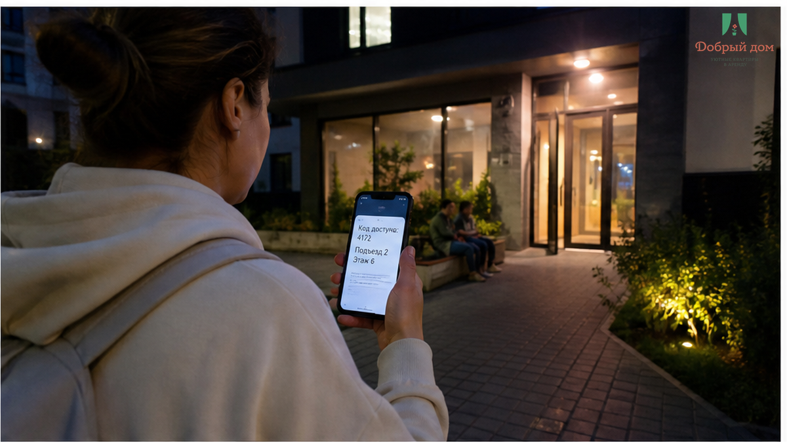
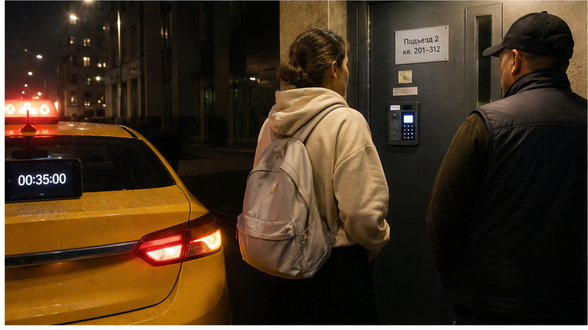
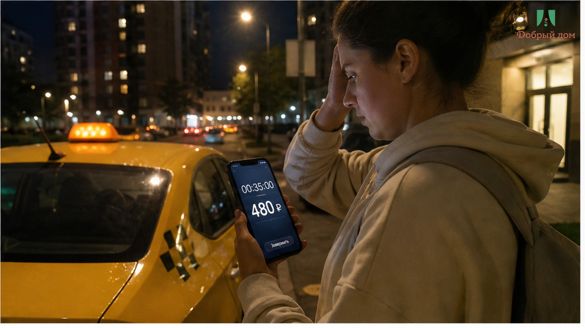
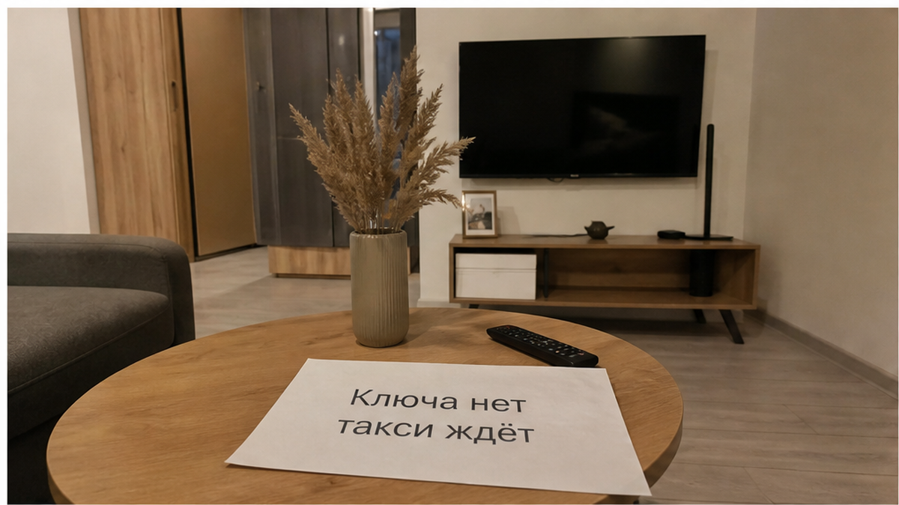
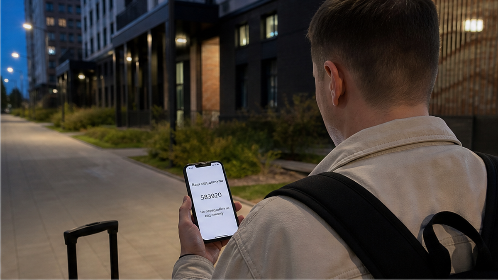
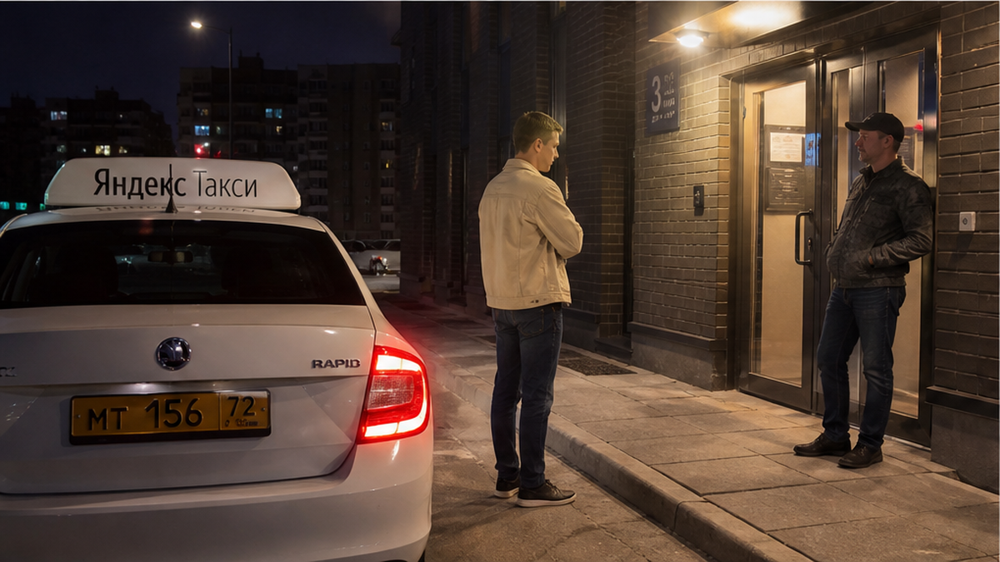
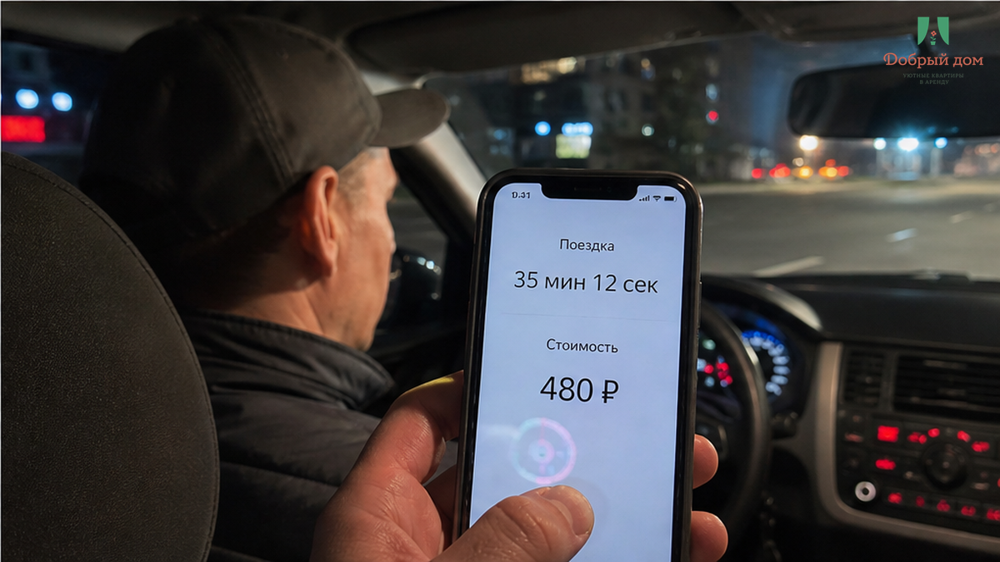

«Нажмите сильнее» — такой совет получил мужчина, который пятый раз набирал код на мёртвой панели ключницы. Он приехал после поезда, к вечеру, в сентябре: у подъезда было около +4, ветер тянул из арки. Такси уже остановилось и уехало, чемодан стоял рядом, а на экране телефона было сообщение с четырьмя цифрами и словом «готово». Только сама ключница не подала ни звука и не показала ни огонька. Через тридцать пять минут гость вызвал другое такси за 480 ₽ и уехал в гостиницу. Код был. Ночёвки в этой квартире не было.
Я хост посуточной в Тюмени. Это «Добрый дом». И я знаю, почему такие истории особенно злят: человек сделал всё, что ему сказали. Приехал по адресу, получил код, нашёл подъезд. Но бесконтактное заселение закончилось на первой кнопке — там, где хозяин должен был заранее проверить не только цифры, но и железо, которое эти цифры открывают. Мы принимаем обращения в Telegram и MAX.

В подобных случаях эмоций много, но сначала нужно посмотреть на переписку. Она быстро показывает, где обещанное заселение рассыпалось.
Гость написал: «Набрал код пять раз. Панель молчит, подсветки нет». В ответ получил: «Нажмите сильнее». Когда это не помогло, он спросил: «Она не реагирует вообще. Может, села батарейка?» Тогда хост ответил: «Сейчас приеду, 20 минут».
Двадцать минут превратились в тридцать пять. За это время мужчина обошёл подъезд, попытался понять, где именно висит ключница, спросил у выходящих жильцов и несколько раз снова написал в чат. Хост не приехал ни через двадцать минут, ни через сорок. У гостя были адрес, оплата и код, но не было главного — возможности попасть внутрь.
В переписке не оказалось фотографии места, где висит коробка. Не было второго способа входа: соседа с дубликатом, менеджера с ключом или понятного номера, по которому действительно приедут. Была одна цифровая последовательность и уверенность, что она сработает.

Сбой начался не в тот момент, когда гость нажал пятую кнопку. Он начался раньше — когда отправку кода приняли за проверенное заселение.
— Код получил, но ключница совсем не реагирует.
— Нажмите сильнее.
— Я уже несколько раз набрал. Подсветки нет, щелчка тоже.
— Возможно, нужно нажать медленнее. Сейчас приеду, 20 минут.
Вот здесь и возникла подмена. Вместо диагностики хозяин стал угадывать действия гостя. Вместо запасного входа появилось обещание приехать, но без контроля времени. А вопрос был не в том, правильно ли мужчина набирал цифры. Если панель молчит и не загорается, сначала проверяют батарейку, питание и механизм. Гость не обязан ремонтировать ключницу у подъезда.
Спросите себя: если прямо сейчас панель не откроется, кто конкретно откроет дверь и через сколько минут? Если на этот вопрос нет имени, телефона и реального плана, слово «бесконтактное» ничего не гарантирует.

Когда человек ищет «квартиры посуточно Тюмень», он часто обращает внимание на слова «бесконтактное заселение 24/7». Это удобно: поезд приходит поздно, не нужно подстраиваться под встречу, ключ можно получить самостоятельно. Но удобство существует только до первой неисправности.
Ключница — не облачный сервис. Это железный ящик на улице. У него садится батарейка, замерзает механизм, внутрь попадает влага, панель может перестать реагировать после удара или просто из-за возраста. Код в смс — только половина входа. Вторая половина — рабочая ключница в конкретной точке дома и человек, который не исчезнет, если она не сработает.
Не код в смс и не слово «бесконтакт» в объявлении, а рабочий вход в момент вашего приезда. Всё остальное — только способ доставки инструкции. Если ключницу никто не открыл руками перед заселением и запасного варианта нет, это не сервис, а ставка на удачу.
Наш вердикт здесь простой: нет, так не заселяем. Гость не должен стоять под чужим подъездом и доказывать мёртвой панели, что он правильно нажимает кнопки.

Между фразами «код отправлен» и «гость зашёл» есть несколько скучных действий. Именно они и отделяют нормальное заселение от переписки у закрытой двери.
Сначала мы показываем место на фотографии: подъезд, стену, козырёк, высоту, на которой находится ключница. Человек, который вышел из такси в темноте и держит чемодан, не должен искать коробку по всему фасаду с фонариком телефона. Он должен сразу понимать, куда идти.
Затем ключницу открывают перед приездом. Не вспоминают, что «вчера всё работало», а набирают код сегодня, слышат щелчок, достают ключ, возвращают его на место и закрывают панель. Так проверяется и код, и батарейка, и сам механизм.
Наконец, у гостя должен быть живой человек, а не только набор цифр. Менеджер «Доброго дома» на связи в Telegram и по телефону +7 993 574-83-22. Если ключница молчит, задача менеджера — не написать «нажмите сильнее», а приехать с ключом или открыть дверь другим способом.
Мы уже разбирали похожую ситуацию, когда код пришёл вовремя, но человек оказался не у той двери: как работает бесконтактное заселение посуточно в Тюмени. Здесь случай жёстче: адрес был верным, а отказала сама точка входа.

А как заканчивались похожие истории у вас? Приезжал хозяин, находился сосед с запасным ключом, помогал консьерж — или вы тоже уезжали и платили за другое место? Напишите в Telegram или MAX. Там можно разобрать конкретную ситуацию, пока детали ещё не стерлись.

До перевода денег задайте хосту одну фразу: «Где именно ключница и есть ли запасной способ входа?»
Ответ обычно показывает больше, чем красивое описание квартиры. Нормальный хост пришлёт фотографию места и скажет, кто приедет с ключом, если панель не откроется. Ответ «код придёт в смс, всё просто» означает, что при сбое вы, скорее всего, останетесь один на один с дверью.
Та же проверка нужна и в других ситуациях. Если после предоплаты хост перестал отвечать, это уже не случайность, а провал связи — мы разбирали такой случай отдельно. Если у двери внезапно требуют доплату за третьего гостя, обещание в объявлении тоже оказалось неполным: что делать с неожиданной доплатой. А когда нельзя войти, особенно остро чувствуешь цену каждой минуты — как в истории о багаже между выездом и поездом: куда деть чемоданы между выездом и поездом.

Сначала проверка, потом перевод. Не наоборот. Код без исправной ключницы и без человека на связи — это не заселение, а лотерея. В этом случае цена лотереи составила 480 ₽ за второе такси, сорванную ночь и гостиницу вместо оплаченной квартиры.
Перед поездкой стоит уточнить пять вещей:
Эта проверка занимает у хоста несколько минут. Для гостя она может сохранить вечер, деньги и доверие к самому слову «бесконтактно». Мы проверяем вход до приезда и остаёмся на связи, чтобы человек заходил в квартиру, а не переписывался с дверью.
Нужна квартира в Тюмени с проверенным входом и человеком на связи?